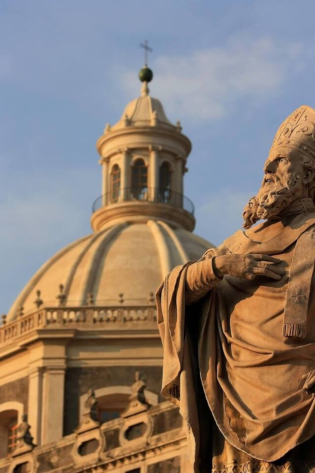
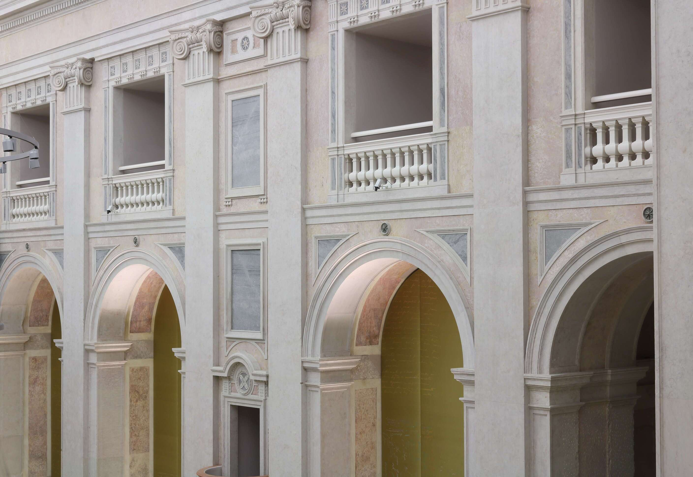
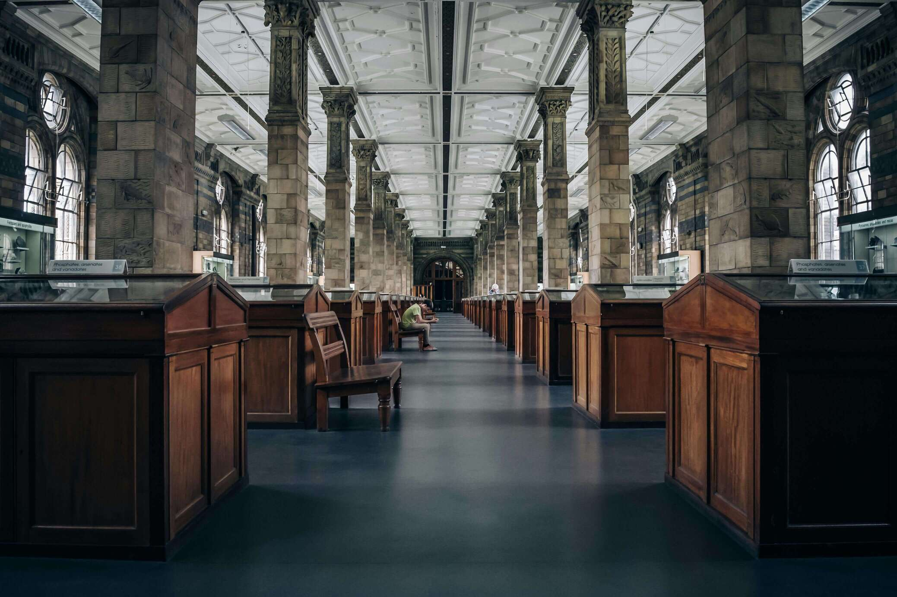
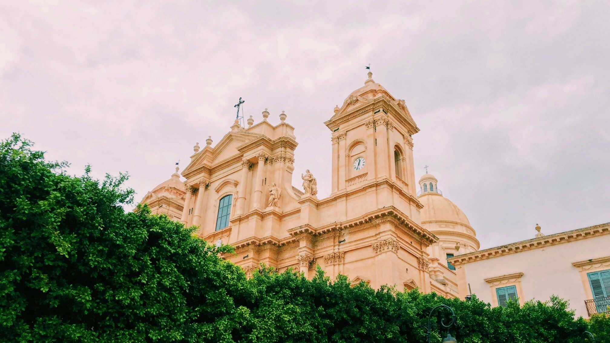
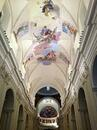
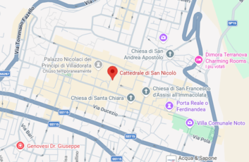

patrimonio unesco
Museo Diocesano Cattedrale di Noto
Un viaggio attraverso secoli di arte sacra, architettura barocca e spiritualità nel cuore della val di Noto
Mar - Dom: 10.00 - 18:00
Piazza Duomo, Noto (SR)
Esplora il museo
Un patrimonio di arte e fede nel cuore del barocco siciliano





Il Museo
Il Museo Diocesano della Cattedrale di San Nicolò a Noto custodisce una delle più preziose collezioni di arte sacra della Sicilia orientale. Situato nel suggestivo complesso della cattedrale, patrimonio UNESCO dal 2002, il museo offre un viaggio attraverso secoli di storia, fede e maestria artistica.
Il percorso espositivo è pensato per valorizzare il legame tra le opere e il contesto religioso e storico in cui sono nate, permettendo al visitatore di comprendere più a fondo il significato spirituale e artistico dei manufatti.
Il museo rappresenta inoltre un importante punto di riferimento culturale per il territorio, contribuendo alla tutela e alla valorizzazione del patrimonio ecclesiastico locale.
Le collezioni comprendono paramenti liturgici, argenterie, dipinti, sculture e documenti che testimoniano la ricchezza spirituale e culturale della diocesi di Noto dal XV secolo ai giorni nostri.
500+
Opere sposte
6
Sale espositive
1694
Anno di fondazione
Pianifica la tua visita
Scegli l'esperienza più adatta a te
Visita guidata
12€
Tour con guida esperta incluso
Gruppi e scuole
Su richiesta
Tariffe dedicate e percorsi personalizzati
Biglietto singolo
5€
Accesso completo a tutte le sale

Contatti
Vieni a trovarci
 +39 0931 573778
+39 0931 573778
per prenotazioni:
+39 0931573780
 Piazza Duomo
Piazza Duomo
96017, Noto (SR) Sicilia
 Mar-Dom: 10:00-18:00
Mar-Dom: 10:00-18:00
Lunedi: chiuso
Festivi: 10:00-14:00
 info@museodinoto.it
info@museodinoto.it
prenotazioni@museodinoto.it